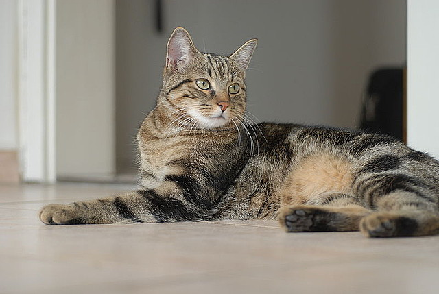

Kot Europejski
Pochodzenie
Kot europejski jest rasą naturalną, czyli ukształtowaną przez środowisko i klimat, w tym przypadku Europy. Człowiek nie odegrał w tym procesie dużej roli, zwłaszcza iż prawdziwa selekcja hodowlana tych kotów rozpoczęła się całkiem niedawno. Kot europejski to także bardzo, bardzo stara rasa. Ich odlegli przodkowie trafiali na kontynent Europejski jeszcze w czasach starożytnych. Futrzaki wpierw zadomowiły się w krajach basenu morza śródziemnego, później wyruszyły na podbój całej Europy – razem z Rzymianami. Obecnie koty europejskie zamieszkują cały stary kontynent a jego potomkami są między innymi koty brytyjskie krótkowłose i koty amerykańskie krótkowłose.
Charakter i zachowanie
Kot europejski powinien być silnym i sprawnym fizycznie zwierzęciem. Rasowe europejczyki mają charakter i zachowania typowe dla swoich nierodowodowych kuzynów. Są zatem niezależne, ale potrafią być wspaniałymi towarzyszami człowieka – czułymi i kochającymi.
Pielęgnacja
Pielęgnacja kota europejskiego polega przede wszystkim na odpowiednim żywieniu. Jakiś specjalnych zabiegów pielęgnacyjnych futrzaki te nie wymagają. Przycinanie pazurków, kontrolne wizyty u lekarza – jak w przypadku innych kocich ras. Regularne czesanie futra wskazane jest przede wszystkim w okresach linienia. Kąpieli zwierzaki te nie wymagają.>